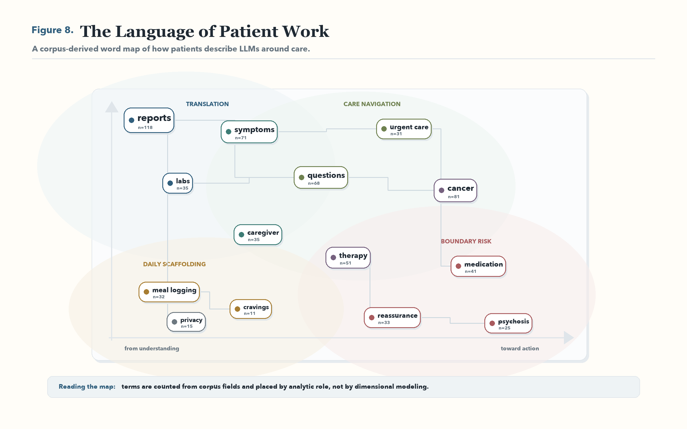
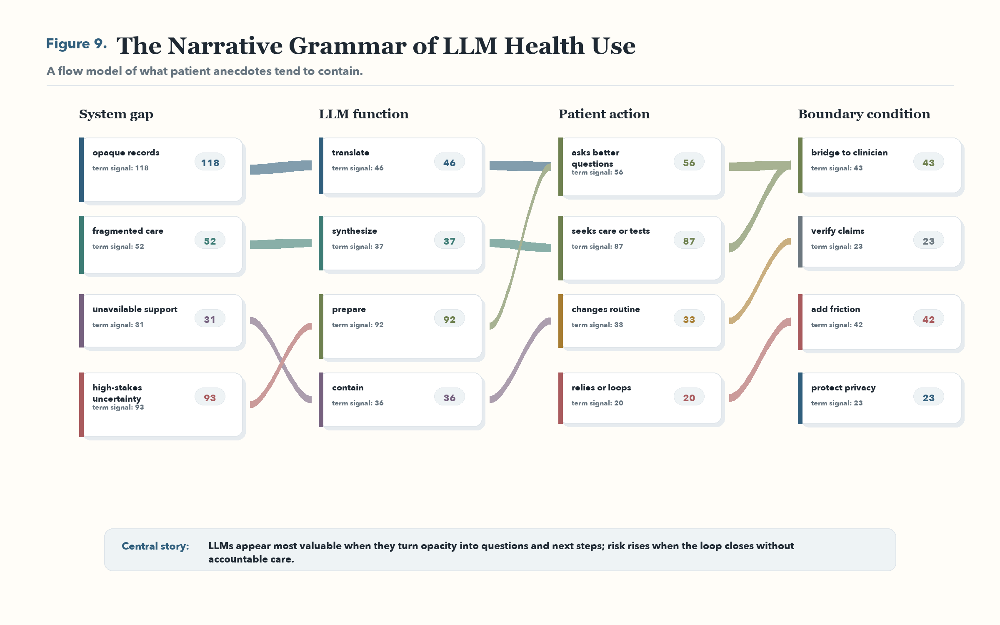
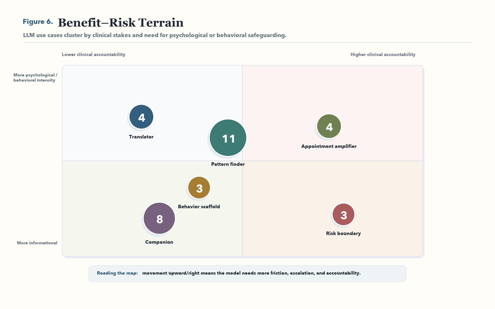

Exploratory Qualitative Evidence Map
The Plural of Anecdote Is Data
How patients describe using large language models for health.
What This Project Does
This project treats public anecdotes as data about patient behavior, unmet needs, and safety boundaries. The claims are not prevalence estimates or evidence of clinical efficacy. They are signals about how people use LLMs when formal care is absent, opaque, rushed, or hard to reach.
Visual Story
The figures summarize the paper’s central argument: patients use LLMs for the work around care, and risk rises when supportive sensemaking turns into clinical authority without accountability.



Analytic Themes
Translator
Explaining labs, pathology, imaging, notes, and medical jargon.
Pattern Finder
Connecting fragments across symptoms, records, and time.
Appointment Amplifier
Turning confusion into questions, summaries, and next steps.
Companion
Providing reflection, grounding, and emotional presence between encounters.
Risky Validator
Reinforcing unsafe certainty, compulsive reassurance, or psychosis-like loops.
System Workaround
Filling gaps left by short visits, delayed referrals, and inaccessible support.